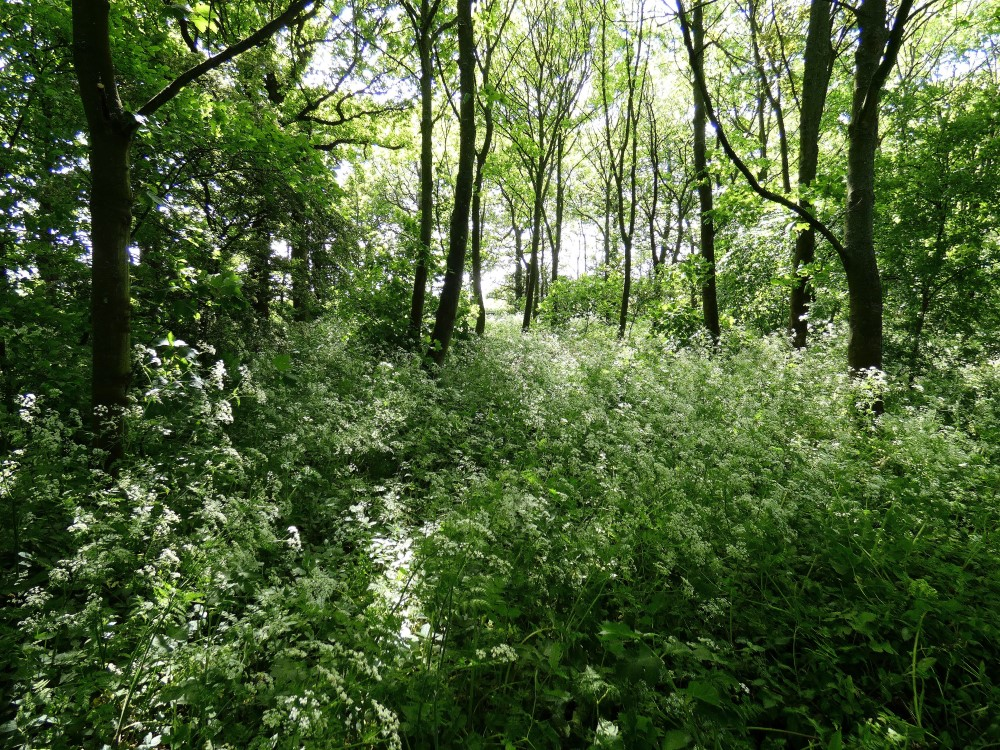

Keahlian Kami

Marine and Fisheries
Pengembangan Kawasan Minapolitan, Penyusunan Zonasi Wilayah Pesisir dan Pulau-Pulau Kecil, Mitigasi Pencemaran Laut.
Selengkapnya
Environmental Studies
Monitoring Kualitas Lingkunga, Mitigasi Perubahan Iklim dan Pencemaran, Kajian Kerusakan Sumber Daya Alam Akibat Produksi Biomassa.
Selengkapnya
Survey dan Pemetaan
Pengembangan Aplikasi GIS dalam Perencanaan dan Tata Ruang, Pemetaan Pesawat Tanpa Awak (Drone).
Selengkapnya
Ekonomi dan Manajemen
Impelementasi Sistem Manajemen Mutu, Survey Kepuasan Pelanggan, Analisis Kelayakan Finansial, Analisis Tata Niaga,
Selengkapnya

Agriculture and Forestry
Kajian Pengembangan Infrastruktur Pertanian, Kajian dan Penerapan Sistem Konservasi Tanah dan Air, Pengembangan dan Pemberdayaan Petani,
Selengkapnya
Marine and Fisheries
- Pengembangan Kawasan Minapolitan.
- Penyusunan Zonasi Wilayah Pesisir dan Pulau-Pulau Kecil.
- Mitigasi Pencemaran Laut.
- Inventarisasi Potensi Pesisir dan PulauPulau Kecil.
- Konservasi Ekosistem Mangrove, Terumbu Karang, dan Padang Lamun.
- Analisis Kelayakan Project Kelautan dan Perikanan.
- Pemberdayaan Nelayan dan Masyarakat Pesisir.
Envorimental Studies
- Monitoring Kualitas Lingkungan.
- Mitigasi Perubahan Iklim dan Pencemaran.
- Kajian Kerusakan Sumber Daya Alam Akibat Produksi Biomassa.
- Konservasi Keanakeragaman Hayati.
- Penilaian Jasa Lingkungan.
- Perencanaan Ruang Terbuka Hijau.
- Kajian Daya Dukung dan Daya Tampung Lingkungan Hidup.
- Kajian Lingkungan Hidup Strategis.
Survey dan Pemetaan
- Pengembangan Aplikasi GIS dalam Perencanaan dan Tata Ruang.
- Pemetaan Pesawat Tanpa Awak (Drone).
- Survey, Investigasi dan Desain Pengelolaan Sumber Daya Alam.
- Interpretasi Citra Satelit alam Pengelolaan Sumberdaya.
Ekonomi dan Manajemen
- Impelementasi Sistem Manajemen Mutu.
- Survey Kepuasan Pelanggan.
- Analisis Kelayakan Finansial.
- Analisis Tata Niaga.
- Pengembangan Klaster Industri.
Agriculture and Forestry
- Kajian Pengembangan Infrastruktur Pertanian.
- Kajian dan Penerapan Sistem Konservasi Tanah dan Air.
- Pengembangan dan Pemberdayaan Petani.
- Kajian Produksi dan Pemasaran Komoditas Pertanian.
- Pengembangan Mikro Organisme Lokal.
- Pengendalian Hama Terpadu.
- Analisis Kelayakan Project Pertanian dan Kehutanan.
- Rehabilitasi Lahan dan Hutan.
- Penyusunan Rancangan Teknis Rehabilitasi DAS dan Bekas Areal Tambang.
- Pengembangan Hasil Hutan Berbasis Produk Unggulan.
- Penataan dan Pemetaan Areal Pertanian dan Hutan.
- Studi Dinamika Karbon dan Perubahan Tutupan Lahan.
- Forest Health Monitoring.
Portofolio Perusahaan
- Penyusunan Rancangan Teknik Penanaman Dalam Rangka Rehabilitasi Daerah Aliran Sungai.
- Desain Tapak Kawasan Konservasi Taman Hutan Raya Gunung Kunci Palasari.
- Penyusunan Masterplan Kawasan Minapolitan.
- Kajian Teknis Unit Pengolahan Hasil Hutan Cirebon.
- Implementasi ISO/IEC 17025-2017 dan Persiapan Akreditasi Pada Dinas Lingkungan Hidup Kab. Garut.
- Identikasi dan Rona Awal Perhitungan Karbon (REDD+) Dengan Fokus Pada Area Forest Programme II Site 2 Pada Balai Pengelolaan DASHL Batanghari Jambi.
- Pengawasan dan Penilaian (WASLAI) Pelaksanaan Pekerjaan Rehabilitasi Hutan (RHL) Meliputi pembuatan Agroforestry dan Reboisasi Tahun Pertama (PO) Tahun Kedua (P1) dan Tahun ketiga (P2) Tahun 2019 Dalam Rangka Pelaksanaan Forest Programme II (REDD+).
- Perancangan Dampak Perubahan Iklim Dan Bahan Tercemar Terhadap Kelestarian Pulau-Pulau Kecil.
- Rencana Induk Pengelolaan Keanekaragaman Hayati.
- Kajian Daya Dukung Daya Tampung.
- Perancangan Pemulihan Ekosistem Padang Lamun Pada Kawasan Konservasi Perairan Kabupaten Indramayu Berbasis Teknologi Transplantasi.

Copyright©2020 Oxtcode